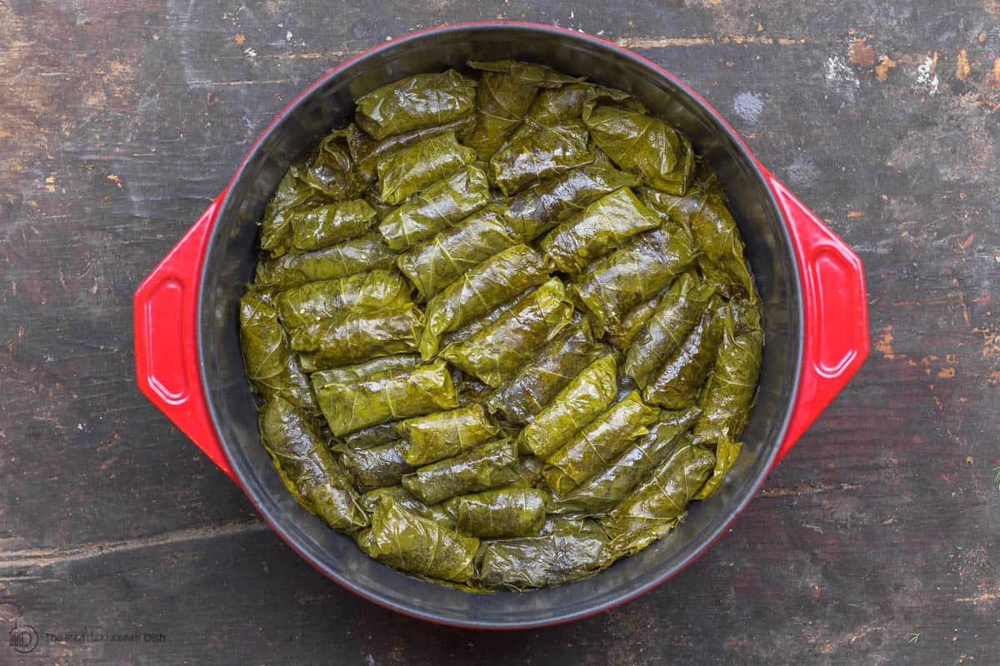

Stuffed grape leaves

our delicious yum yums
These are grape leaves, stuffed with a tantalizing mixture of rice, fresh dill, mint and lemon.
'Yum' is the only one word to describe these.
These can either be a main dish or an appetizer, depending on your appetite.
Serve with good crusty bread and a Greek salad, if desired.
Ingredients
- 2 cups uncooked long-grain white rice
- 1 large onion, chopped
- ½ cup chopped fresh dill
- ½ cup chopped fresh mint leaves
- 2 quarts chicken broth
- ¾ cup fresh lemon juice, divided
- 60 grape leaves, drained and rinsed
- hot water as needed
- 1 cup olive oil
Steps
- In a large saucepan over medium-high heat, saute the rice, onion, dill, and mint for about 5 minutes, or until onion is soft.
Pour in 1 quart of broth, reduce heat to low and simmer for another 10 to 15 minutes,
or until rice is almost cooked. Stir in 1/2 of lemon juice and remove from heat.
- Take one leaf, shiny side down, and place 1 teaspoon of the rice mixture at the bottom (stem) end of the leaf.
Fold both sides of the leaf towards the center, roll up from the broad bottom to the top, and place into a 4-quart pot.
Repeat with all leaves, leaving no gaps as leaves are placed in pot (to prevent from opening while cooking).
Sprinkle with remaining lemon juice and with olive oil.
- Pour chicken broth over all to cover grape leaves. Cover pot and simmer for about 1 hour
(do not boil, because this will make the stuffing burst out of the leaves).
Remove from heat, remove cover and let cool for 1/2 hour. Transfer to serving dish and serve.